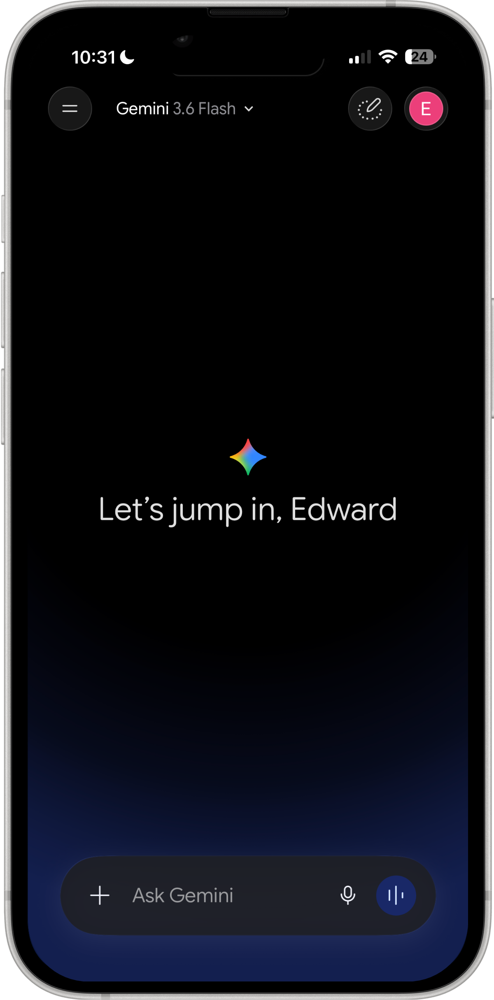
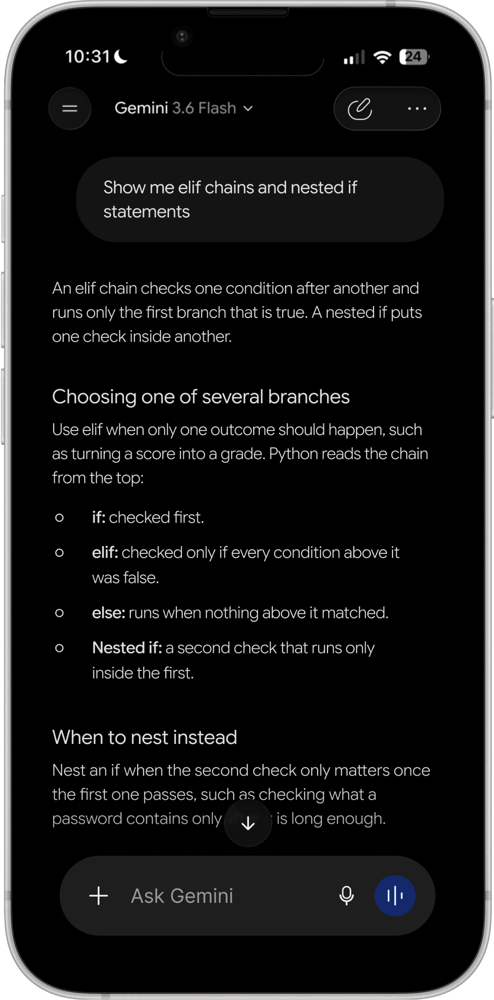
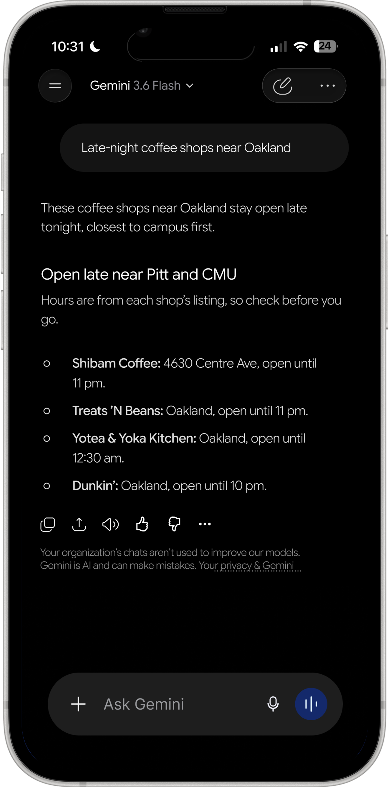

A redesign of Gemini's iOS home screen: two stacks of suggestions in the empty space under the greeting, one for the time and place, one for recent work.
Gemini opens on a greeting and a text field. Nothing on it reflects what you did the last time you opened the app.

Gemini’s home screen today
Most of the first screen is empty
The space between them is the first thing people see. It holds nothing to use, and nothing hints that the app can read a photo or write code.
Research
People skip the prompts and type their own question
I watched classmates open their AI assistants. Almost nobody read the suggested prompts; they typed the question they already had. No assistant publishes how often its prompts are clicked, so below is the nearest evidence.
Generic suggestions go unclicked
In Nielsen Norman Group's tests of Amazon's shopping assistant, no one clicked a suggested prompt unprompted. Starters built from a person's past chats did better: 9.4% more clicks in a month-long test.
People go back for what they found before
As many as 40% of searches look for something already found, and people misremember the original search 30% of the time. An old chat asks the same of memory.
Teevan et al., SIGIR 2007: a year of Yahoo logs from 114 people, and a study of 119 volunteers.
Going back to an old chat means remembering it
Once a chat leaves recents, search is the only way back, and you have to remember it exists and what it was called.
Searching chatsThe chat it finds
The hour says less on a phone
In Claude, recipe requests are 2.3 times as common at 6 pm. But across 37.5 million Copilot chats, the top topic on phones held at every hour.
Takeaway
Generic prompts get skipped and people return to old work. The home screen should lead with that, and use the time and place only when they point at something specific.
My first idea was a row of better prompts, but people skip prompts. So I asked what the screen should show, given what Gemini already knows.
From
"How might the home screen suggest better prompts?"
To
"How might the home screen use what Gemini already knows about you?"
A long script in the chat
An idea I set aside
Code blocks in the chat cut off long lines, comments included. Smaller code wasn't the answer: Google's designers would have weighed this, so I treated its size as their minimum.
The same script, fullscreen
A fullscreen view
A button opens the block fullscreen, and whole lines fit, until the text size goes up.
Turned sideways, whole lines fit. But few people review code on a phone, and I hadn't checked who had the problem, so I set it aside.
Components
Rebuilding Gemini before changing it
Gemini has no public design kit, so I drew Google Sans Flex, the icons, the status bar and both keyboards as vectors, then rebuilt each screen.
From that I documented its type, colour and components, then added the stacks.
Typography
Colour
Google Sans Flex for the app, and SF Pro for anything iOS draws. Each size is recorded where it appears.
Blue from the glow behind the text field, blacks from the surfaces, greys from secondary text.
Components
Every part of a chat session is a component in one Figma file, so the stacks match the app.
Design Breakdown
Suggestions from the time, the place and your last chat
The greeting stays. Two stacks fill the space under it: the time and place on the left, recent work on the right, each card naming something specific.
The stacks take their space from the text field, so each card has to be more useful than the question you were about to type.
Each stack's two cards
Glass cards
The cards are glass so the blue glow behind the text field shows through. A solid fill would read more easily but look stuck on.
The evening stack, then the work stack
The stacks move independently
The evening stack changes from coffee to dinner, then the work stack changes from the Python chat to the study app project.

Tapping Python Script Help
A card from recent work picks up the chat
Tapping it reopens the Python chat and sends the card's next step, so Gemini answers where you left off.

Tapping late-night coffee shops
A card for the evening asks for you
Tapping it starts a new chat with the request sent, and Gemini lists places near campus that are open late.
Reflections
Check how many people a problem affects before designing for it
I would rebuild the app first again: only at full size could I tell which empty areas were intentional. Two parts are still open.
When a guess is wrong
Nothing yet says what happens when a suggestion misreads the time, place or task. In a study of coding assistants, a third of proactive suggestions went ignored.
What it knows about you
The stacks use your location and recent chats. Nothing yet shows you that, or lets you turn it off.